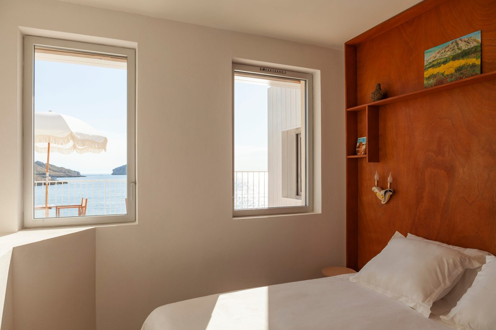
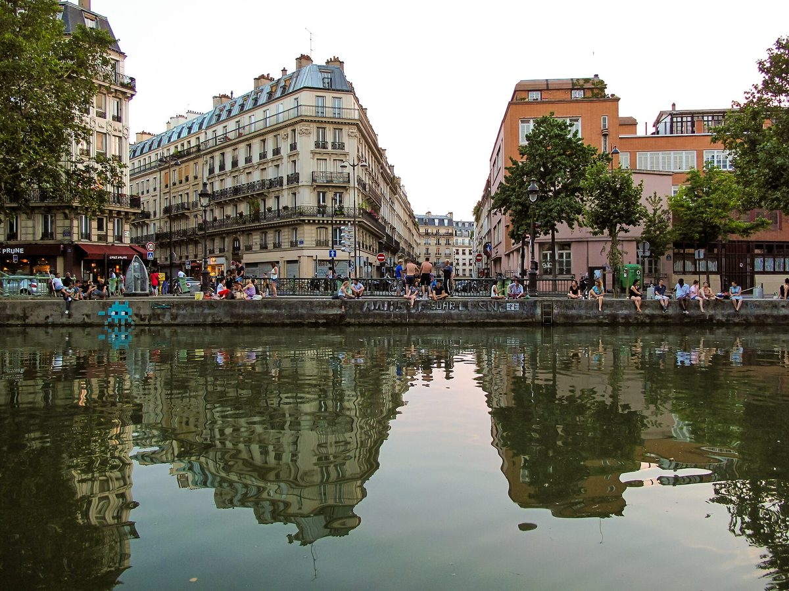

Les 8 meilleurs restaurants de Bordeaux en 2026
Bordeaux · 11 min de lecture

Les 8 meilleurs restaurants de Marseille en 2026
Marseille · 11 min de lecture

Où manger à Lyon : 15 tables en 2026
Lyon · 15 min de lecture

Les 10 meilleurs bouchons lyonnais en 2026
Lyon · 13 min de lecture

Meilleur brunch à Paris : 12 adresses en 2026
Paris · 12 min de lecture

Les 25 meilleurs restaurants de Paris en 2026
Paris · 16 min de lecture

Les 15 meilleurs restaurants de France en 2026
France · 14 min de lecture
Les premières parutions arrivent.
Le sommaire s'ouvrira au premier service. Rien n'est publié ici tant que la rédaction n'est pas allée voir par elle-même.